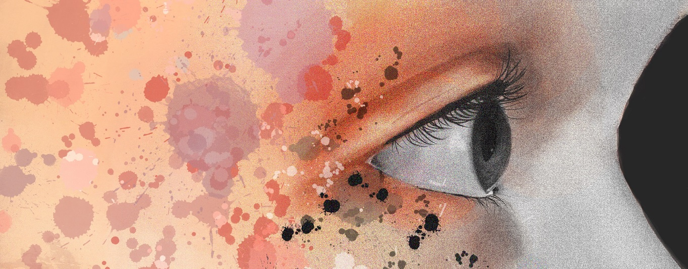

Texte

Blau
Kindergeschichte
In einem Wettrennen tritt Blau gegen die anderen Farben an, um den Planeten Erde Farbe zu verleihen. Als Blau jedoch als letztes ankommt, gibt es kaum noch einen leeren Fleck und Blau geht leer aus.
Games. Seriously?
Reportage
Eine Reportage von Céline Krumpholz, Franka Faisst, Benedikt Stronski und Sandra
Stampfl über Videospiele, die im therapeutischen oder klinischen Bereich eingesetzt werden.
Mit einem Interview von Emmanuel Guardiola, Professor am Cologne Games Lab der Technischen
Hochschule in Köln.

Team Kinderbuch
Audio-Feature
Es sind ziemlich viele Hände, die da so mitwirken, wenn ein Kinderbuch entsteht.
Aber wie arbeitet jemand, der Kinderbücher illustriert? Und wie schreibt man für Kinder?
Wie kommen Text und Illustration überhaupt zueinander?
Und was machen Agenturen, Verlage und ein Lektorat?
Mit einem Interview von: Cornelia Boese, Autorin und Dichterin,
Andrea Naasan, Lektorin beim Nord-Süd Verlag, Annabelle von Sperber, Illustratorin und Dozentin.
Gesprochen von Pius Maria Cüppers.
Die Ehre einer Frau
Anthologie: Dark Empire
Eine chinesische Konkubine verzweifelt nach einem gescheirteten Attentat auf den Kaiser. Sie beginnt sich und ihre Pflichten als Konkubine infrage zu stellen.
Der Schrein der Füchse
Anthologie: Fantastische Welten
Ein japanisches Mädchen steht vor der von ihren Eltern arrangierten Hochzueit mit einem Mann, den sie noch nie zuvor getroffen hat. Bekümmert besucht sie ein letztes Mal den Schreit der lokalen Gottheit und verabschiedet sich.